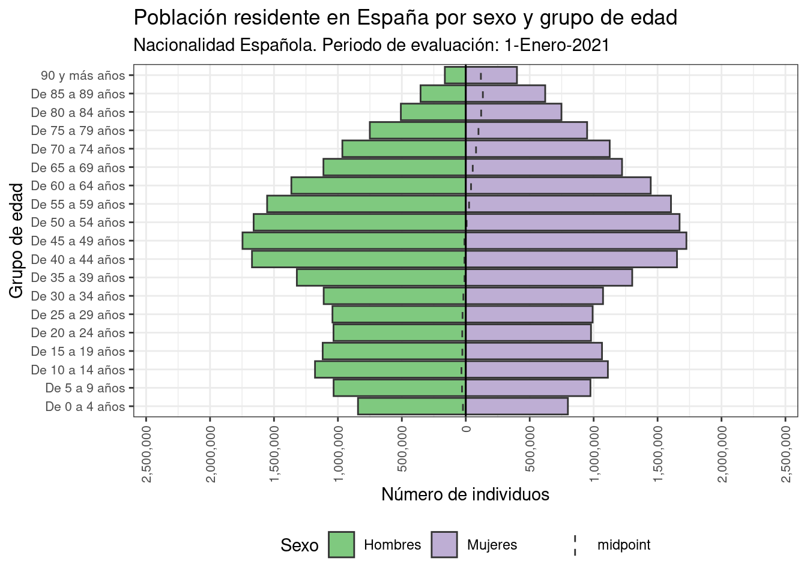
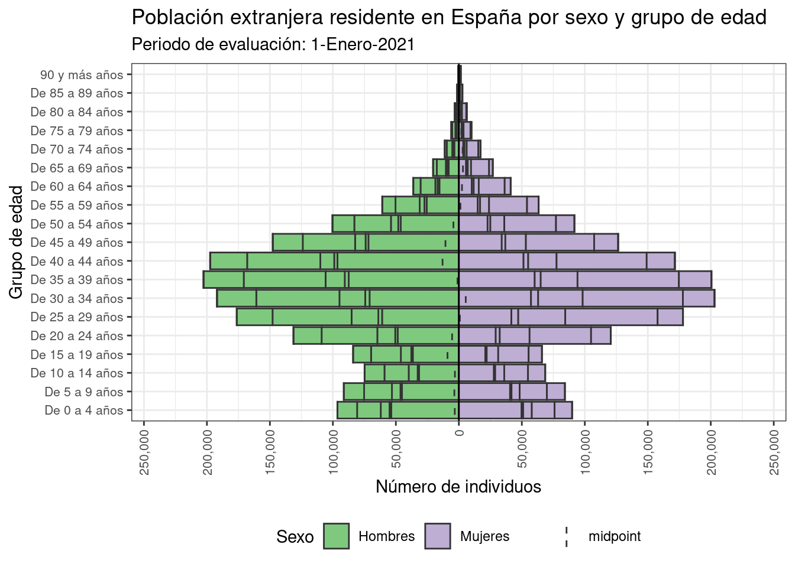
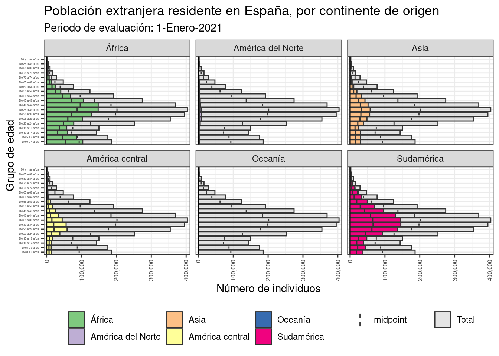
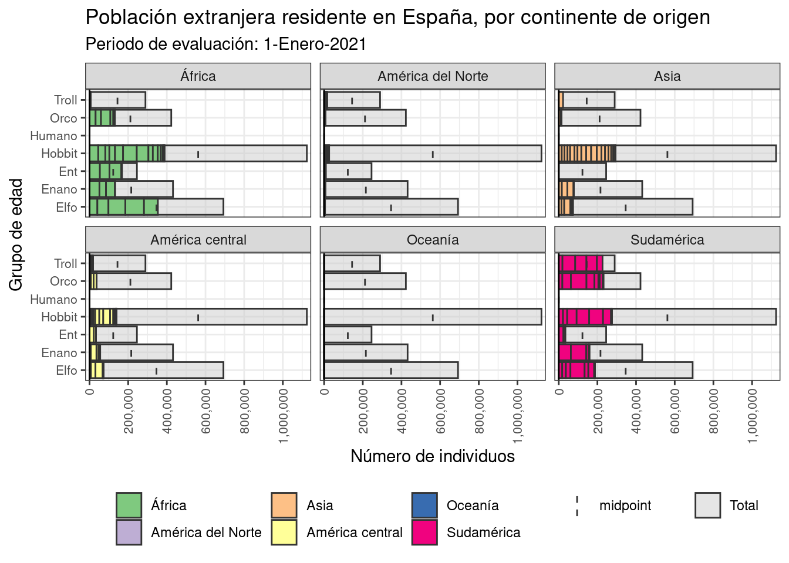
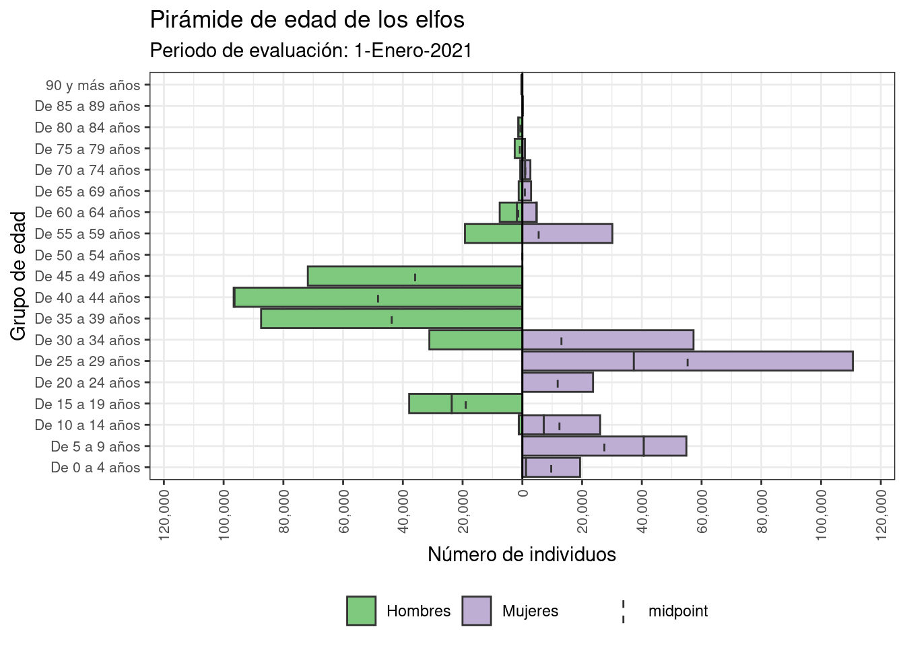
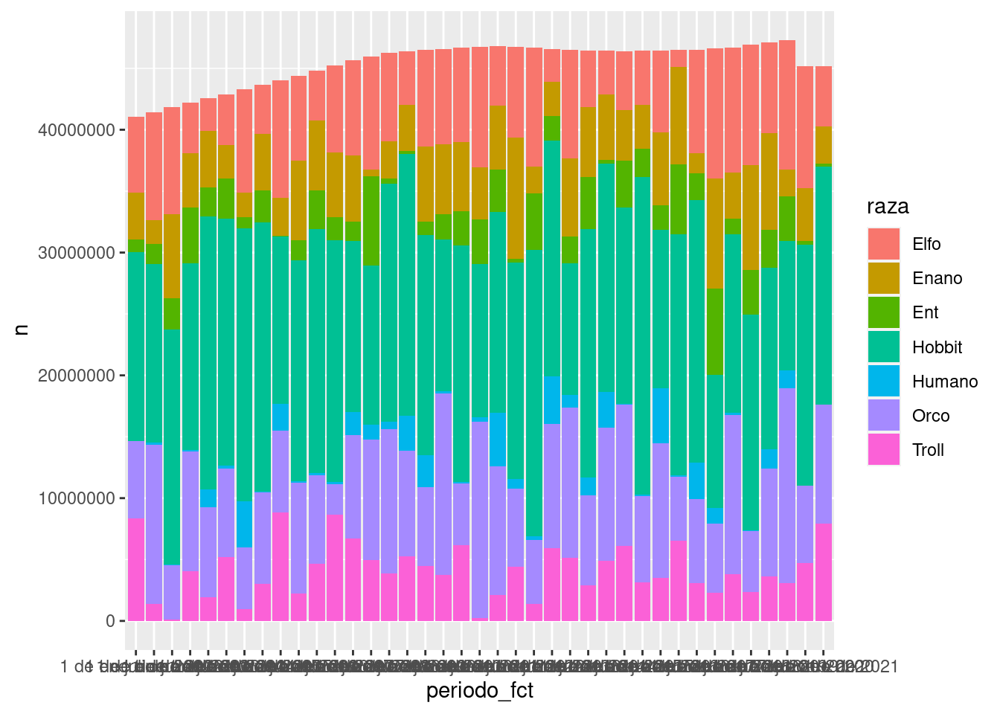
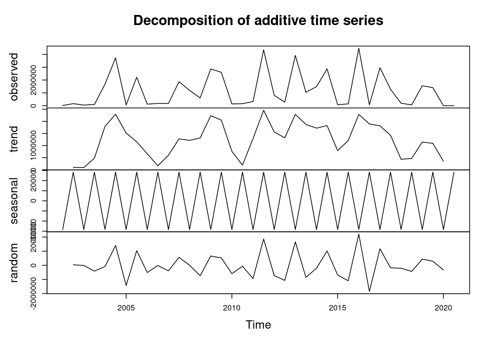

# Configuración general
source(here::here('notebooks', 'config', 'config.R'))
# Carga / instalación de paquete 'pacman'
if (!require(pacman)) install.packages('pacman')
# Instalación de los paquetes necesarios para el caso de uso
pacman::p_load(
rio, # Para importar datos
here, # Para gestión de ubicación de archivos
tidyverse, # Limpieza, transformación y creación de gráficos
apyramid, # Paquete específico para la creación de pirámides de edad
janitor, # Tablas y limpieza de datos
stringr, # Manipulación de cadenas de texto
reactable, # Capacidad de crear tablas interactivas en formato html
Hmisc # Varias utilidades
)A - Pirámides demográficas
Objetivo del caso de uso
Analizar la distribución de los niveles de una variable cualitativa en una población.
- Realizar una tabla descriptiva que permita saber cómo se distribuyen los niveles en la población, tanto en valor absoluto como en proporción.
- Crear gráficos de barras especializados (pirámides demográficas) para mostrar visualmente dicha distribución
Descripción del ejemplo
Para este ejemplo utilizaremos datos reales del INE: Población residente en España por fecha, sexo, grupo de edad y nacionalidad.
Estos datos han sido modificados mediante el procedimiento descrito en el Anexo 3
Realizaremos los siguientes análisis:
- Seleccionaremos una fecha de corte (31-Dic-2021)
- Evaluaremos la distribución numérica de la población analizando dos variables categóricas: sexo y nacionalidad de origen
- Crearemos un gráfico de pirámide para la población extranjera y nacional, estratificado por sexo
- Crearemos una pirámide estratificada por la variable ‘continente de origen’, para ver la contribución de cada continente al total de población extranjera residente
Fase 0 - Preparación. Carga e instalación de paquetes
Fase 1 - Ingerir los datos crudos
Podemos utilizar las siguientes funciones para ingerir (y exportar) nuestros datos:
| Paquete | Función | Acciones |
|---|---|---|
| rio | import() |
Importa bases de datos de diferentes formatos en R |
export() |
Exporta bases de datos de diferentes formatos en R |
BÁSICO - Importar ficheros con el paquete ‘rio’ con
rio::import()
El paquete rio es la forma más sencilla de solucionar las necesidades de importación y exportación de ficheros, de una manera sencilla.
La utilizaremos para importar nuestra tabla de datos (disponible en la carpeta data/lab del material).
datos <- rio::import(
here::here(
'data', 'lab', 'datosPiramide.rds'
)
)Fase 2 - Explorar los datos
La exploración de los datos se puede hacer con las siguientes funciones:
| Paquete | Función | Acciones |
|---|---|---|
| base | str() |
Muestra la estructura de un objeto de R |
summary() |
Resume el contenido de un objeto | |
head()tail() |
Muestra las primeras y últimas porciones de un objeto | |
| Hmisc | describe() |
Mejora el formato de salida de las funciones del paquete base |
| DataExplorer | create_report() |
Crea un informe de exploración de datos para un dataset |
BÁSICO - Explorar con paquete ‘base’:
str(), summary(), head() y tail()
# Estructura del dataframe
str(datos)'data.frame': 13186 obs. of 7 variables:
$ total_numeric : num 843011 864405 885805 900435 919772 ...
$ sexo_fct : Factor w/ 2 levels "Hombres","Mujeres": 1 1 1 1 1 1 1 1 1 1 ...
$ nacionalidad_fct : Factor w/ 9 levels "De Africa","De América del Norte",..: 7 7 7 7 7 7 7 7 7 7 ...
$ grupo_quinquenal_de_edad_fct: Ord.factor w/ 19 levels "De 0 a 4 años"<..: 1 1 1 1 1 1 1 1 1 1 ...
$ periodo_fct : Ord.factor w/ 39 levels "1 de enero de 2002"<..: 39 38 37 36 35 34 33 32 31 30 ...
$ fechaPeriodo : Date, format: "2021-01-01" "2020-07-01" ...
$ raza : Factor w/ 7 levels "Elfo","Enano",..: 4 1 7 2 2 2 4 6 3 3 ...# Resumen descriptivo de los valores
summary(datos) total_numeric sexo_fct nacionalidad_fct
Min. : 1 Hombres:6593 De Africa :1482
1st Qu.: 704 Mujeres:6593 De América del Norte :1482
Median : 5244 De Asia :1482
Mean : 134342 De Centro América y Caribe:1482
3rd Qu.: 33142 De Oceanía :1482
Max. :1757607 De Sudamérica :1482
(Other) :4294
grupo_quinquenal_de_edad_fct periodo_fct fechaPeriodo
De 0 a 4 años : 694 1 de enero de 2002: 342 Min. :2002-01-01
De 5 a 9 años : 694 1 de julio de 2002: 342 1st Qu.:2006-07-01
De 10 a 14 años: 694 1 de enero de 2003: 342 Median :2011-07-01
De 15 a 19 años: 694 1 de julio de 2003: 342 Mean :2011-05-19
De 20 a 24 años: 694 1 de enero de 2004: 342 3rd Qu.:2016-01-01
De 25 a 29 años: 694 1 de julio de 2004: 342 Max. :2021-01-01
(Other) :9022 (Other) :11134
raza
Elfo :1919
Enano :1266
Ent : 695
Hobbit:5152
Humano: 338
Orco :2525
Troll :1291 # Primeros y últimos valores del dataframe
head(datos) total_numeric sexo_fct nacionalidad_fct grupo_quinquenal_de_edad_fct
1 843011 Hombres Española De 0 a 4 años
2 864405 Hombres Española De 0 a 4 años
3 885805 Hombres Española De 0 a 4 años
4 900435 Hombres Española De 0 a 4 años
5 919772 Hombres Española De 0 a 4 años
6 931657 Hombres Española De 0 a 4 años
periodo_fct fechaPeriodo raza
1 1 de enero de 2021 2021-01-01 Hobbit
2 1 de julio de 2020 2020-07-01 Elfo
3 1 de enero de 2020 2020-01-01 Troll
4 1 de julio de 2019 2019-07-01 Enano
5 1 de enero de 2019 2019-01-01 Enano
6 1 de julio de 2018 2018-07-01 Enanotail(datos) total_numeric sexo_fct nacionalidad_fct grupo_quinquenal_de_edad_fct
99289 6 Mujeres De Oceanía 90 y más años
99290 6 Mujeres De Oceanía 90 y más años
99291 4 Mujeres De Oceanía 90 y más años
99292 2 Mujeres De Oceanía 90 y más años
99293 2 Mujeres De Oceanía 90 y más años
99294 2 Mujeres De Oceanía 90 y más años
periodo_fct fechaPeriodo raza
99289 1 de julio de 2004 2004-01-01 Orco
99290 1 de enero de 2004 2004-01-01 Troll
99291 1 de julio de 2003 2003-07-01 Orco
99292 1 de enero de 2003 2003-01-01 Elfo
99293 1 de julio de 2002 2002-07-01 Troll
99294 1 de enero de 2002 2002-01-01 Hobbit
AVANZADO - Exploración con paquete ‘Hmisc’:
Hmisc::describe()
Podemos obtener una información más estructurada con la función describe() del paquete Hmisc
Hmisc::describe(datos)datos
7 Variables 13186 Observations
--------------------------------------------------------------------------------
total_numeric
n missing distinct Info Mean Gmd .05 .10
13186 0 9141 1 134341 235063 40 83
.25 .50 .75 .90 .95
704 5244 33142 510848 1113129
lowest : 1 2 3 4 5
highest: 1751010 1751400 1755825 1756644 1757607
--------------------------------------------------------------------------------
sexo_fct
n missing distinct
13186 0 2
Value Hombres Mujeres
Frequency 6593 6593
Proportion 0.5 0.5
--------------------------------------------------------------------------------
nacionalidad_fct
n missing distinct
13186 0 9
lowest : De Africa De América del Norte De Asia De Centro América y Caribe De Oceanía
highest: De Oceanía De Sudamérica Española País de Europa menos UE28 País de la UE28 sin España
--------------------------------------------------------------------------------
grupo_quinquenal_de_edad_fct
n missing distinct
13186 0 19
lowest : De 0 a 4 años De 5 a 9 años De 10 a 14 años De 15 a 19 años De 20 a 24 años
highest: De 70 a 74 años De 75 a 79 años De 80 a 84 años De 85 a 89 años 90 y más años
--------------------------------------------------------------------------------
periodo_fct
n missing distinct
13186 0 39
lowest : 1 de enero de 2002 1 de julio de 2002 1 de enero de 2003 1 de julio de 2003 1 de enero de 2004
highest: 1 de enero de 2019 1 de julio de 2019 1 de enero de 2020 1 de julio de 2020 1 de enero de 2021
--------------------------------------------------------------------------------
fechaPeriodo
n missing distinct Info Mean Gmd .05
13186 0 38 0.999 2011-05-19 2356 2002-07-01
.10 .25 .50 .75 .90 .95
2003-07-01 2006-07-01 2011-07-01 2016-01-01 2019-01-01 2020-01-01
lowest : 2002-01-01 2002-07-01 2003-01-01 2003-07-01 2004-01-01
highest: 2019-01-01 2019-07-01 2020-01-01 2020-07-01 2021-01-01
--------------------------------------------------------------------------------
raza
n missing distinct
13186 0 7
Value Elfo Enano Ent Hobbit Humano Orco Troll
Frequency 1919 1266 695 5152 338 2525 1291
Proportion 0.146 0.096 0.053 0.391 0.026 0.191 0.098
--------------------------------------------------------------------------------
EXPERTO - Exploración con paquete ‘DataExplorer’:
DataExplorer::create_report()
La función create_report() del paquete DataExplorer crea un informe avanzado para un dataset, que incluye: clases de variables, análisis de datos faltantes, correlación, o análisis de componentes principales, entre otros elementos.
DataExplorer::create_report(datos)Fase 3 - Limpieza de los datos
El proceso detallado de limpieza de los datos se puede ver en el Anexo 03
Fase 4 - Transformación de los datos para el análisis
El proceso detallado de limpieza de los datos se puede ver en el Anexo 03
Fase 5 - Análisis
Tabla resumen
El proceso de crear tablas resumen sigue siempre el mismo patrón
- FILTRAR los datos de interés: en nuestro ejemplo, periodo 1 de enero de 2021
- AGRUPAR por la variable que queremos analizar: en nuestro ejemplo, nacionalidad y sexo
- RESUMIR el valor de interés: en nuestro caso, número total de individuos
- (OPCIONAL): reordenar para facilitar la visualización de los datos
tabla_1 <- datos |>
# FILTRAR los datos de interés: en nuestro ejemplo, periodo 1 de enero de 2021
dplyr::filter(
periodo_fct == '1 de enero de 2021'
) |>
# AGRUPAR por la variable que queremos analizar: en nuestro ejemplo, nacionalidad, raza y sexo
dplyr::group_by(
nacionalidad_fct,
raza,
sexo_fct
) |>
# RESUMIR el valor de interés: en nuestro caso, número total de individuos
dplyr::summarise(
n = sum(total_numeric)
) |>
# (OPCIONAL): reordenar para facilitar la visualización de los datos
tidyr::pivot_wider(
names_from = sexo_fct,
values_from = n
)`summarise()` has grouped output by 'nacionalidad_fct', 'raza'. You can
override using the `.groups` argument.# Visualizamos el contenido
view(tabla_1)Si queremos añadir interactividad a la tabla, para la salida en formato html, podemos utilizar las funciones del paquete reactable
reactable::reactable(tabla_1)Pirámide de edad clásica
Objetivo:
- Crear una pirámide de edad clásica para un conjunto de datos
Para el ejemplo, seleccionaremos la nacionalidad Española, y periodo igual a 1-Enero-2021
datos |>
dplyr::filter(
nacionalidad_fct == 'Española',
periodo_fct == '1 de enero de 2021'
) |>
apyramid::age_pyramid(
age_group = grupo_quinquenal_de_edad_fct,
split_by = sexo_fct,
count = total_numeric
) +
ggplot2::ggtitle(
label = 'Población residente en España por sexo y grupo de edad',
subtitle = 'Nacionalidad Española. Periodo de evaluación: 1-Enero-2021'
) +
ggplot2::theme_bw() +
ggplot2::theme(
legend.position = 'bottom',
axis.text.x = ggplot2::element_text(
angle = 90,
vjust = 0.5,
hjust = 1,
size = 8
),
axis.text.y = ggplot2::element_text(size = 8)
) +
ggplot2::labs(
fill = 'Sexo'
) +
ggplot2::xlab(label = 'Grupo de edad') +
ggplot2::ylab(label = 'Número de individuos')
Pirámide para factores con más de dos niveles
Vamos a crear una nueva tabla, filtrando los datos por continentes, para saber en qué medida la población extranjera contribuye a la población residente total de España.
# Creación del vector con los países de interés
# Pondremos un comentario '#' delante de los países que no nos interesen
paisesSeleccionados <- c(
#"Alemania",
#"Apátridas",
#"Argelia",
#"Argentina",
#"Bangladesh",
#"Bélgica",
#"Bolivia",
#"Brasil",
#"Bulgaria",
#"Canadá",
#"Chile",
#"China",
#"Colombia",
#"Cuba",
"De Africa",
"De América del Norte",
"De Asia",
"De Centro América y Caribe",
"De Oceanía",
"De Sudamérica",
#"Dinamarca",
#"Ecuador",
#"Española",
#"Estados Unidos de América",
#"Extranjera",
#"Filipinas",
#"Finlandia",
#"Francia",
#"Gambia",
#"Ghana",
#"Guinea",
#"Guinea Ecuatorial",
#"Honduras",
#"India",
#"Irlanda",
#"Italia",
#"Lituania",
#"Mali",
#"Marruecos",
#"Mauritania",
#"México",
#"Moldavia",
#"Nicaragua",
#"Nigeria",
#"Noruega",
#"Otro país de África",
#"Otro país de Asia",
#"Otro país de Centro América y Caribe",
#"Otro país de la Unión Europea sin España",
#"Otro país de Sudamérica",
#"Otro país del resto de Europa",
"País de Europa menos UE27_2020",
#"País de Europa menos UE28",
"País de la UE27_2020 sin España"#,
#"País de la UE28 sin España",
#"Países Bajos",
#"Pakistán",
#"Paraguay",
#"Perú",
#"Polonia",
#"Portugal",
#"Reino Unido",
#"República Dominicana",
#"Rumanía",
#"Rusia",
#"Senegal",
#"Suecia",
#"Suiza",
#"Ucrania",
#"Uruguay",
#"Venezuela"
)
# Filtramos la base, para dejar únicamente las observaciones de los países de interés
tmp4 <- datos |>
dplyr::filter(
nacionalidad_fct %in% paisesSeleccionados
)
# Debemos renivelar el factor, para que no aparezcan los niveles filtrados
tmp4$nacionalidad_fct <- factor(
x = tmp4$nacionalidad,
levels = paisesSeleccionados,
labels = c(
'África',
'América del Norte',
'Asia',
'América central',
'Oceanía',
'Sudamérica',
'Europa - países no UE27',
'Europa - UE27 sin ES'
)
)
levels(tmp4$nacionalidad_fct)[1] "África" "América del Norte"
[3] "Asia" "América central"
[5] "Oceanía" "Sudamérica"
[7] "Europa - países no UE27" "Europa - UE27 sin ES" Podemos repetir la pirámide sencilla, para ver cómo se distribuyen los grupos de edad en esta subpoblación:
tmp4 |>
dplyr::filter(
periodo_fct == '1 de enero de 2021'
) |>
apyramid::age_pyramid(
age_group = grupo_quinquenal_de_edad_fct,
split_by = sexo_fct,
count = total_numeric,
vertical_lines = FALSE
) +
ggplot2::ggtitle(
label = 'Población extranjera residente en España por sexo y grupo de edad',
subtitle = 'Periodo de evaluación: 1-Enero-2021'
) +
ggplot2::theme_bw() +
ggplot2::theme(
legend.position = 'bottom',
axis.text.x = ggplot2::element_text(
angle = 90,
vjust = 0.5,
hjust = 1,
size = 8
),
axis.text.y = ggplot2::element_text(size = 8)
) +
ggplot2::labs(
fill = 'Sexo'
) +
ggplot2::xlab(label = 'Grupo de edad') +
ggplot2::ylab(label = 'Número de individuos')
Podría interesarnos segregar el continente del que proviene la población extranjera residente en España. Para ello, vamos a crear un tipo especial de gráfico, la pirámide desagregada en función de los niveles de una categoría.
De nuevo, filtraremos la población de 1-Ene-2021
Podemos evaluar qué proporción de población extranjera residente aporta cada continente,
tmp4 |>
dplyr::filter(
periodo_fct == '1 de enero de 2021'
) |>
apyramid::age_pyramid(
age_group = grupo_quinquenal_de_edad_fct,
split_by = nacionalidad_fct,
count = total_numeric
) +
ggplot2::ggtitle(
label = 'Población extranjera residente en España, por continente de origen',
subtitle = 'Periodo de evaluación: 1-Enero-2021'
) +
ggplot2::theme_bw() +
ggplot2::theme(
legend.position = 'bottom',
axis.text.x = ggplot2::element_text(
angle = 90,
vjust = 0.5,
hjust = 1,
size = 6
),
axis.text.y = ggplot2::element_text(size = 3)
) +
ggplot2::labs(
fill = ggplot2::element_blank()
) +
ggplot2::xlab(label = 'Grupo de edad') +
ggplot2::ylab(label = 'Número de individuos')
O evaluar de qué continentes provienen las razas
tmp4 |>
dplyr::filter(
periodo_fct == '1 de enero de 2021'
) |>
apyramid::age_pyramid(
age_group = raza,
split_by = nacionalidad_fct,
count = total_numeric
) +
ggplot2::ggtitle(
label = 'Población extranjera residente en España, por continente de origen',
subtitle = 'Periodo de evaluación: 1-Enero-2021'
) +
ggplot2::theme_bw() +
ggplot2::theme(
legend.position = 'bottom',
axis.text.x = ggplot2::element_text(
angle = 90,
vjust = 0.5,
hjust = 1,
size = 8
),
axis.text.y = ggplot2::element_text(size = 8)
) +
ggplot2::labs(
fill = ggplot2::element_blank()
) +
ggplot2::xlab(label = 'Grupo de edad') +
ggplot2::ylab(label = 'Número de individuos')
O la distribución por sexos de una determinada raza
tmp4 |>
dplyr::filter(
periodo_fct == '1 de enero de 2021',
raza == 'Elfo'
) |>
apyramid::age_pyramid(
age_group = grupo_quinquenal_de_edad_fct,
split_by = sexo_fct,
count = total_numeric
) +
ggplot2::ggtitle(
label = 'Pirámide de edad de los elfos',
subtitle = 'Periodo de evaluación: 1-Enero-2021'
) +
ggplot2::theme_bw() +
ggplot2::theme(
legend.position = 'bottom',
axis.text.x = ggplot2::element_text(
angle = 90,
vjust = 0.5,
hjust = 1,
size = 8
),
axis.text.y = ggplot2::element_text(size = 8)
) +
ggplot2::labs(
fill = ggplot2::element_blank()
) +
ggplot2::xlab(label = 'Grupo de edad') +
ggplot2::ylab(label = 'Número de individuos')
Evolucion temporal de la población, por razas
Podemos analizar la evolución temporal de la población, por razas
tabla2 <- datos |>
dplyr::group_by(
periodo_fct,
raza
) |>
dplyr::summarise(
n = sum(total_numeric)
) |>
tidyr::pivot_wider(
names_from = raza,
values_from = n
)`summarise()` has grouped output by 'periodo_fct'. You can override using the
`.groups` argument.tabla2# A tibble: 39 × 8
# Groups: periodo_fct [39]
periodo_fct Elfo Enano Ent Hobbit Humano Orco Troll
<ord> <dbl> <dbl> <dbl> <dbl> <dbl> <dbl> <dbl>
1 1 de enero de 2002 6139922 3861480 998647 15382280 17337 6290040 8345177
2 1 de julio de 2002 8760105 1960334 1643904 14544921 158916 12951827 1403067
3 1 de enero de 2003 8734955 6796097 2566830 19122606 49577 4438474 118781
4 1 de julio de 2003 4117514 4404184 4563325 15194099 95834 9789203 4031535
5 1 de enero de 2004 2658337 4608853 2335305 22254108 1430821 7348457 1911022
6 1 de julio de 2004 4094152 2742440 3255613 20109843 246565 7188136 5221846
7 1 de enero de 2005 8410233 1995050 892799 22274000 3723737 5033688 966222
8 1 de julio de 2005 3971072 4600777 2658542 21896829 57900 7475019 3001851
9 1 de enero de 2006 9525740 3092417 114142 13572497 2222105 6665380 8817073
10 1 de julio de 2006 6885368 6455045 1659792 17990766 119578 9024287 2225061
# ℹ 29 more rowsdatos |>
dplyr::group_by(
periodo_fct,
raza
) |>
dplyr::summarise(
n = sum(total_numeric)
) |>
ggplot2::ggplot(
ggplot2::aes(
x = periodo_fct,
y = n,
fill = raza
)
) + ggplot2::geom_col()`summarise()` has grouped output by 'periodo_fct'. You can override using the
`.groups` argument.
## Serie temporal
datos_filtradosElfos <- datos |>
dplyr::filter(
raza == 'Humano'
) |>
dplyr::group_by(fechaPeriodo) |>
dplyr::summarise(n = sum(total_numeric))
ts_data <- ts(
datos_filtradosElfos$n,
start = c(2002, 1),
frequency = 2
) |>
decompose() |>
plot()
¡Más información!
Puede obtenerse información complementaria sobre la creación de pirámides demográficas en el capítulo 33 del Epidemiologist R Handbook (Batra et al. 2021)